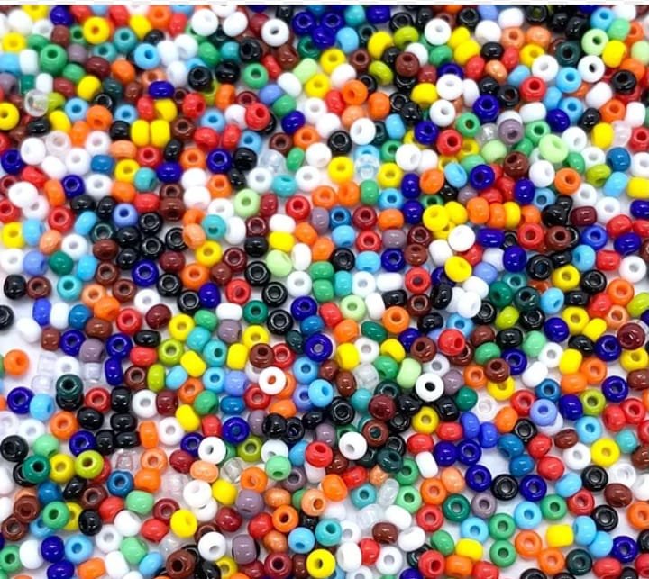

Historia
Fábricacion de un artículo en mostacillas

La fabricación de un artículo en mostacillas (también conocidas como cuentas o abalorios) es un proceso creativo y divertido que permite elaborar diversas piezas decorativas, como pulseras, collares, llaveros y más. A continuación, te presento una guía básica para hacer un artículo en mostacillas:
Materiales Necesarios
Mostacillas: Elige el tipo, color y tamaño que deseas usar.
Hilo o alambre: Dependiendo del artículo que vayas a crear. El hilo de nylon es común para pulseras y collares, mientras que el alambre es ideal para estructuras más rígidas.
Cierre: Si estás haciendo una pulsera o collar, necesitarás un cierre adecuado.
Aguja para mostacillas: Si las cuentas son pequeñas, una aguja puede facilitar el ensartado.
Tijeras: Para cortar el hilo o alambre.
Pinzas: Si usas alambre, te ayudarán a cerrar los extremos y colocar los cierres.
Base o soporte: Para mantener tus mostacillas organizadas mientras trabajas.
Pasos para la Fabricación
Diseño: Antes de comenzar, es útil hacer un diseño. Puedes dibujar en papel o simplemente visualizar cómo quieres que se vea tu artículo.
Corte del Hilo/Alambre: Corta una longitud de hilo o alambre que sea aproximadamente 10 cm más larga que el tamaño final que deseas para tu artículo. Esto te dará suficiente material para trabajar.
Enhebrado de Mostacillas:
Si usas hilo, enhebra la aguja y pasa las mostacillas a través de ella, siguiendo tu diseño.
Si usas alambre, simplemente enrosca las mostacillas en el alambre.
Ajuste del Diseño: A medida que añades las mostacillas, verifica que el diseño se mantenga como lo imaginaste. Puedes hacer ajustes en cualquier momento.
Colocación del Cierre: Una vez que hayas alcanzado la longitud deseada:
Si usas hilo, haz un nudo seguro y coloca el cierre.
Si usas alambre, utiliza las pinzas para doblar el extremo y asegurar las mostacillas, luego coloca el cierre.
Finalización: Asegúrate de que todos los nudos estén bien ajustados y que el cierre funcione correctamente. Corta cualquier exceso de hilo o alambre.
Revisión: Inspecciona tu artículo para asegurarte de que no haya cuentas sueltas o nudos visibles.
Visión
ser la plataforma líder en la promoción y venta de productos innovadores y de calidad ser reconocida por su excepcional experiencia de usuario y su compromiso con la satisfacción del cliente. Aspiramos a trasformar la forma en que los consumidores descubren y adquieren productos, integrando tecnología avanzada y personalización para ofrecer recomendaciones relevantes y experiencias de compras únicas.
Nos proponemos ser un referente en la industria promoviendo la trasferencia y sostenibilidad y la responsabilidad.
Proyectarnos en un futuro siendo una plataforma líder a nivel Departamental y Nacional con el objetivo de dar a conocer la cultura, autenticidad y promocionar nuestros productos hechos a mano a la comunidad digital. Cómo también buscar acoplarnos constantemente a las necesidades cambiantes de nuestros usuarios y continuar innovando y aportando a la trasformación digital